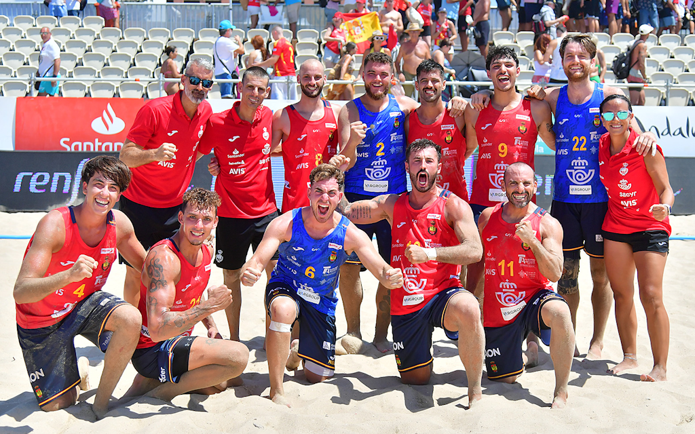
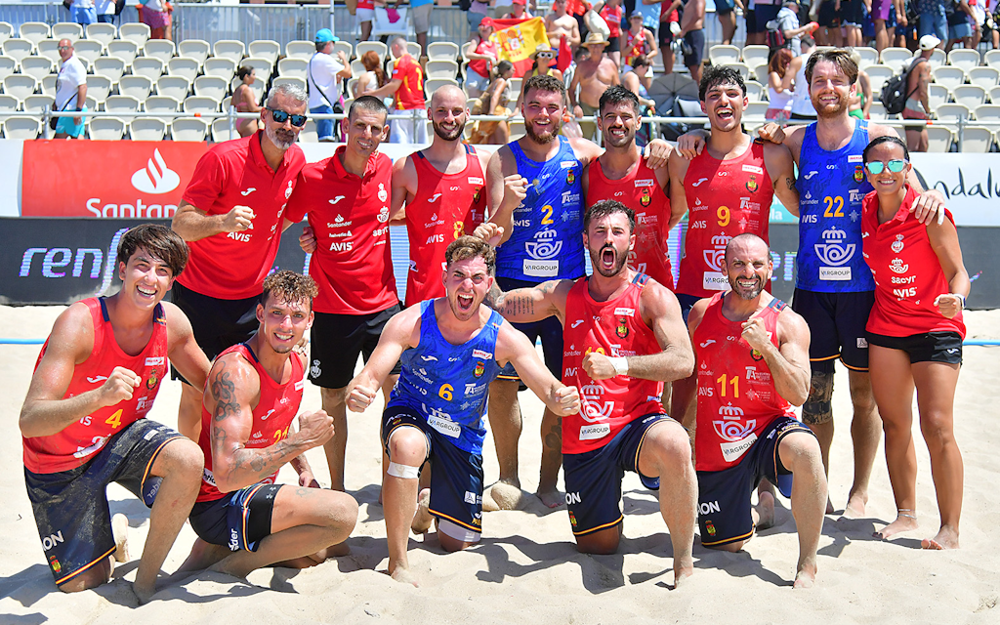
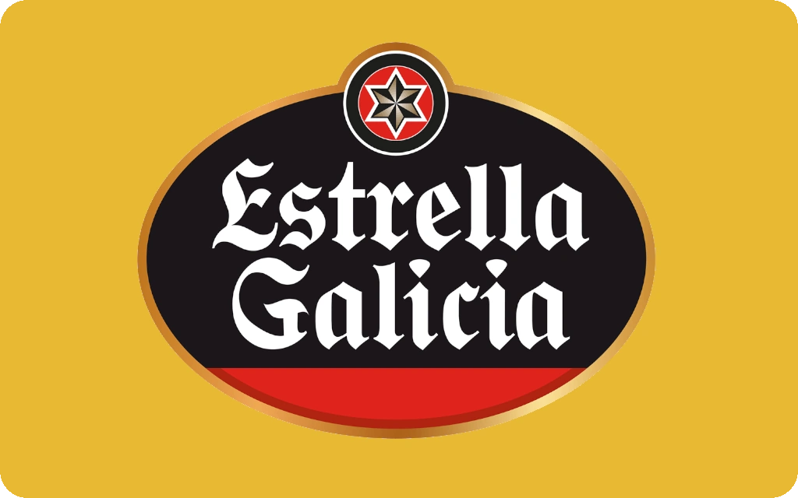
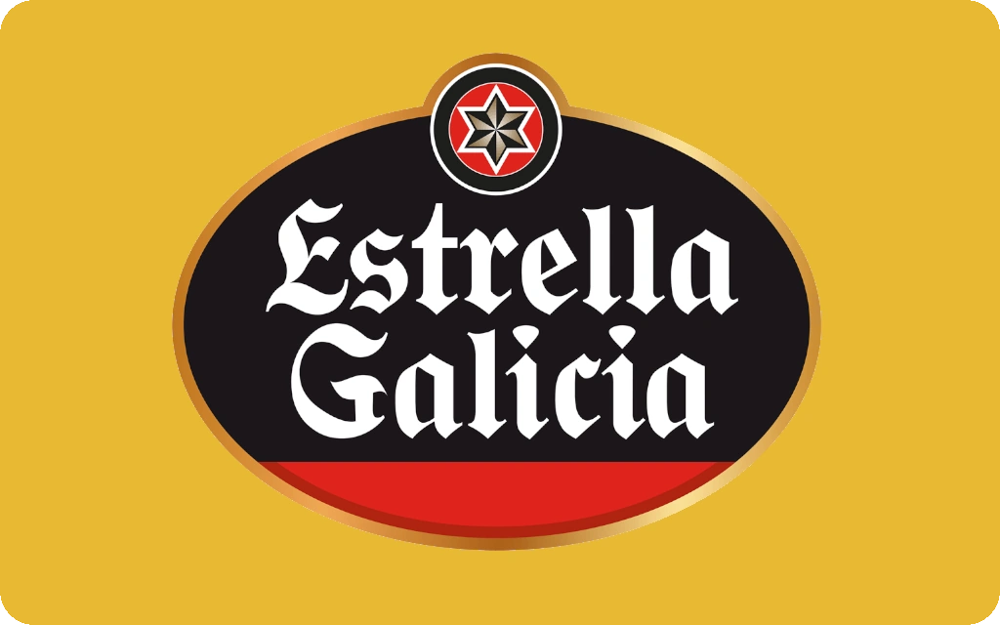
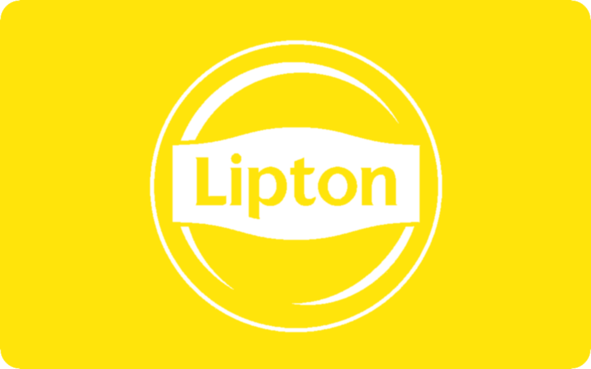
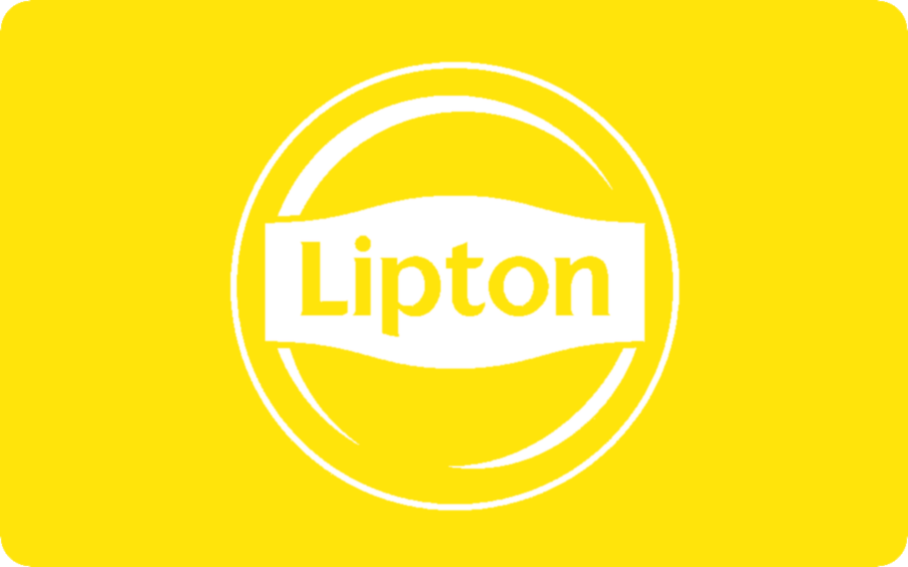
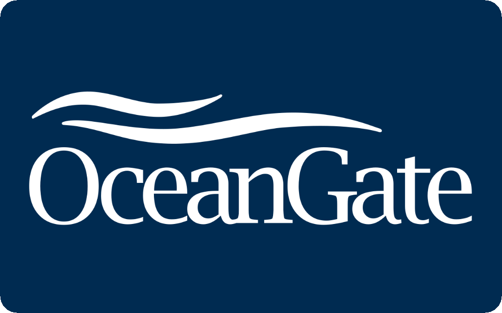
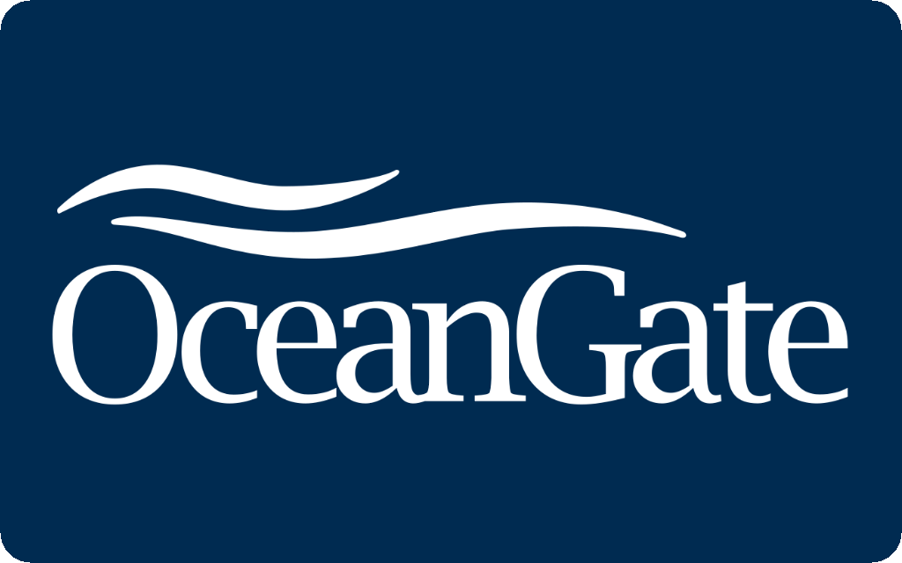

La Real Federación Española de Balonmano (RFEBM) fue eclipsada en 1942 por la Verdadera Federación Española de Balonmano (VFEBM) mientras ellos se llevaban toda la gloria por hacer algo que nosotros ya hacíamos 5 años antes. Este letargo va a acabar ya que la RFEBM ha revivido de sus cenizas con su nuevo estreno este año 2024.
Contamos con 6 de los mejores equipos de toda la nación española estos siendo: Barcelona, Madrid, Sevilla, Bilbao, Murcia y Cáceres. Durante esta temporada de 2024-2025 veremos los mejores partidos de toda la temporada entre estos equipos para ver quien se consigue alzar con el título de la liga.
A que estas esperando para empezar a verlos ya a través de las mejores plataformas de streaming como: DAZN, Movistar+ y LaLiga Sports TV. También puedes ver las últimas noticias en nuestras redes sociales.
HIMNO DE NUESTRA FEDERACIÓN


 



 


 

 
